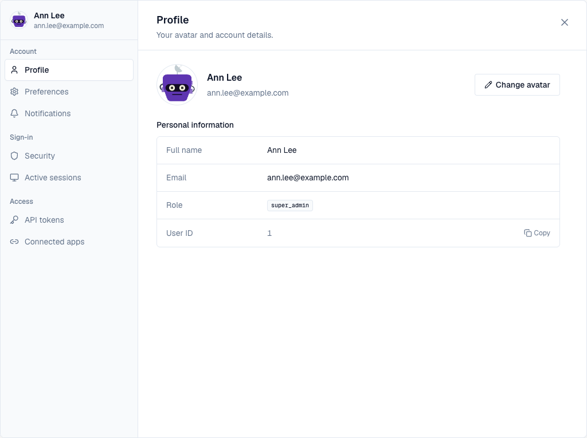
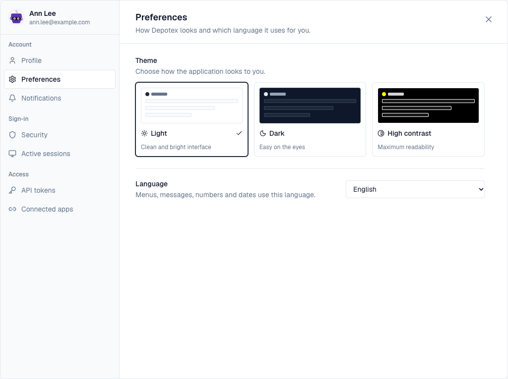
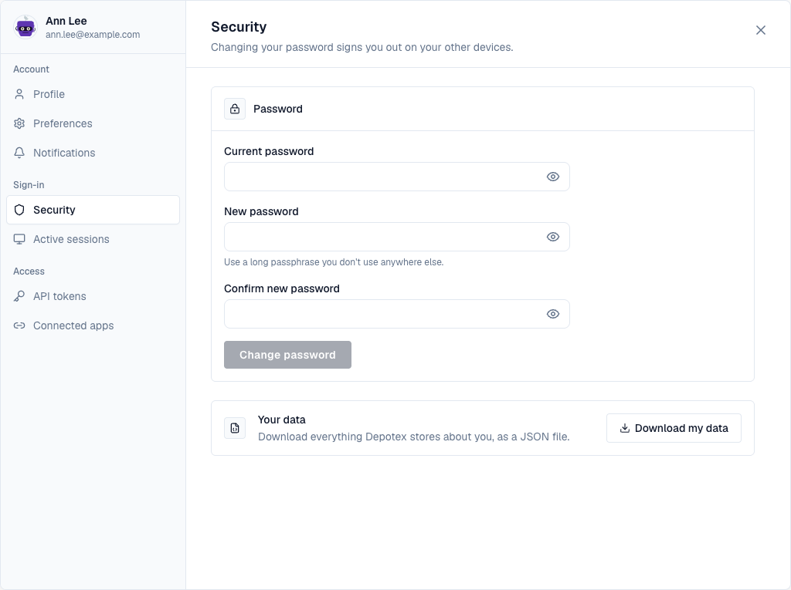
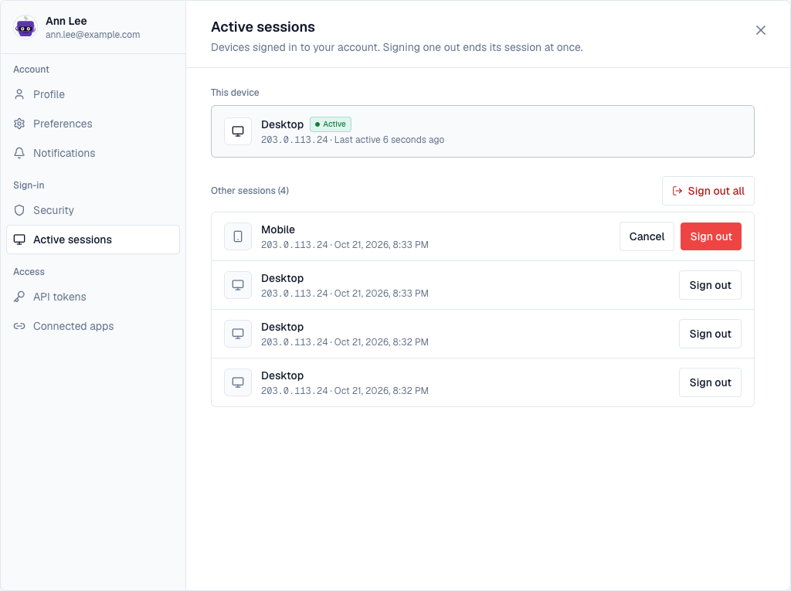
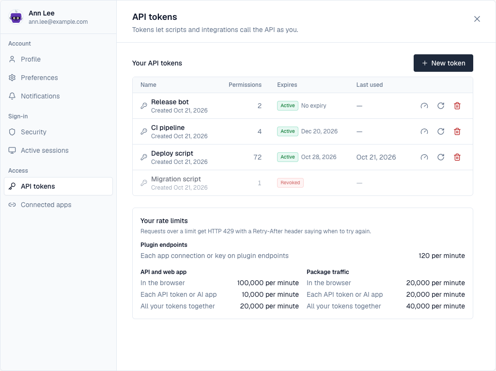
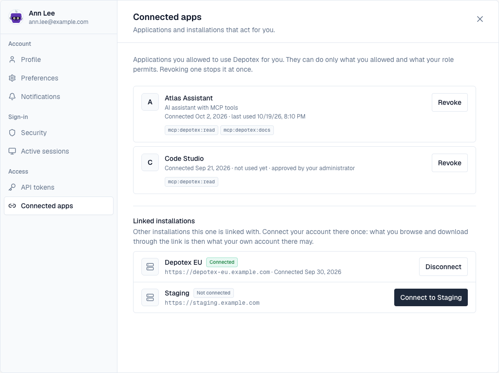
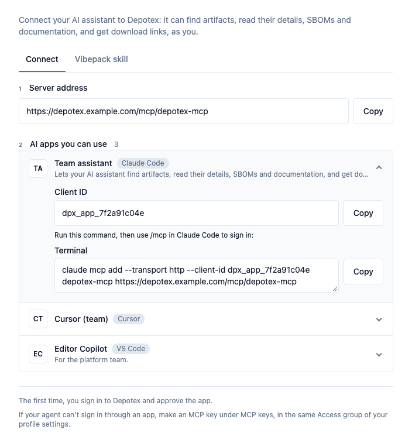

1. Overview
Your profile settings hold everything about your own account. Open them from the profile menu (your picture or initials, top right) with Edit Profile, or from the places that link to one section: the bell's settings icon and Preferences on the notifications page open Notifications, the dashboard's token and session cards open API tokens and Active sessions. A link ending in ?profile=tokens (or another section) opens that section directly.
The left side shows who you are and the sections in three groups: Account (Profile, Preferences, Notifications), Sign-in (Security, Active sessions) and Access (API tokens, Connected apps, then sections that installed plugins add, such as Connect an AI agent and MCP keys). Each section says at the top what it is for. On a phone the sections are a row of tabs above the content.

2. Profile
- Change avatar opens the picker: choose one of the preset pictures, or Upload image (JPEG, PNG or WebP, up to 2 MB). Without a picture, your initials are shown.
- Personal information shows your name, email, role and user ID; Copy next to the ID puts it on the clipboard. An administrator can change them in Settings → Users.
3. Preferences
Pick Light, Dark or High contrast; each card previews that theme. Language sets the language of menus, messages, numbers and dates: English or German (Deutsch). Both are saved for your account and follow you to other devices. Emails Depotex sends you (invitations, password resets, alerts) use the same language.

4. Notifications
Opt out of non-critical alerts, mute categories, and see the categories your administrator forces on everyone. A summary says what you'll receive. Changes wait in a bar at the bottom until you Save preferences or Discard them. See Alerts.
5. Security
- Password: enter your current password and the new one twice; the form says at once when the two don't match. Changing it signs you out on your other devices.
- Your data: Download my data saves a JSON file with everything Depotex stores about you.

6. Active sessions
This device is the browser you're using, with when it was last active. Below it are your other sessions, each with its kind of device, address and last activity. Sign out ends one session, Sign out all ends every other one; both ask you to confirm first, in place.

7. API tokens
Your tokens for scripts and integrations: their permissions, when they expire and were last used, with rotate and revoke. New token opens the form in place, with templates to start from. See API tokens.

8. Connected apps
Applications you allowed to act for you (such as an AI assistant), with what they may do, when they connected and were last used, and whether your administrator approved them for everyone. Revoke stops one at once, after you confirm. Below them, Linked installations lists other Depotex installations this one is linked with: Connect signs you in there once, so what you browse through the link is what your own account there may see. See OAuth applications.

9. Connect an AI agent
While the MCP server plugin is active, Access → Connect an AI agent shows how to connect an AI assistant to Depotex. Connect has the server address to copy, then the AI apps your administrator set up for this server: open one for its client ID and how to add the server in that app, such as the claude mcp add command or the mcp.json entry. Vibepack skill downloads the skill that lets an AI coding agent save and pick up vibe projects, with the steps to install and use it, and the commands for saving without an agent.

If an agent can't sign in through an AI app, MCP keys, next to it, makes a key for it (when an administrator allows MCP keys).
Every section is available on every licence tier. IP allowlists and rotation of API tokens need a Pro licence.